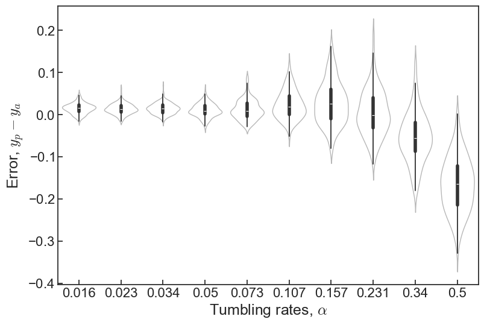
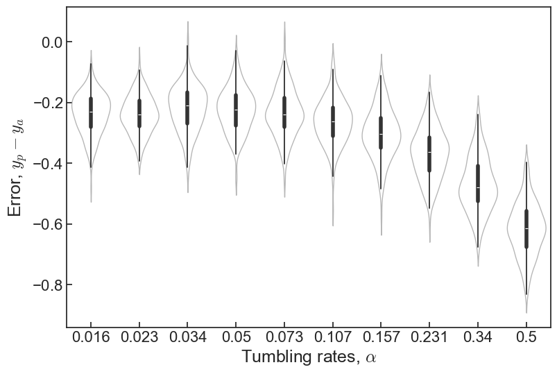

Number of unique alpha: 10
Shape of x: (10000, 128, 128, 1)
Shape of y: (10000,)
Size of training data: 8000
Size of validation data: 2000Week 15
Tasks
Summary
We are currently doing this on our personal machines as doing interactive mode is not possible on BluePebble (unclear about BlueCrystal). Playing with the CNNs on a local notebook is the best method for now to be able to prototype quickly.
Basics on the architecture of CNN
We feed our snapshots in, but to represent it as a tensor. Our snapshot has one channel depth, so the tensor shape is (128,128,1).
We start out with the convolutional layer. This layer performs a convolution, scanning the input with a number of filters with a smaller size than the input image itself, the size of the filter is determined by the kernel size. And the output of shape of the convolutional layer is of shape (128,128,N) where N is the number of filters applied.
- Kernel size
(x,y)is the window size that scans the image at each iteration. - Stride
(x,y)is the step length to jump at each iteration. - Each filter produces a feature map, every filter added captures more complex patterns.
- We increase filter size with subsequent layers to capture more more combinations.
A flatten layer will turn the input shape (x,y,c) into (x*y*c), i.e. a 1D vector.
A dense layer (or fully-connected), map all input neurons to output neurons. It takes in the number of units (neurons) and turn the input shape (x,y,c) into (x,y,units).
- Linear activation is pass-through (does nothing).
A pooling layer reduces dimensions of the feature maps, which reduces the number of parameters. We have max pooling and average pooling (max takes maximum value from the kernel window and average takes the mean).
A dropout layer randomly drops a fraction (the input parameter) of the input units to 0.
A batch normalization layer normalizes the output. This helps with training speed.
To help reduce overfitting:
- Increase training data
- Use pooling, batch normalization, and dropout layers
Classifying our model/problem
For this week, we start building the network. Our network is a regression problem, predicting a continuous parameter, our tumbling rate .
For this to work, we choose a loss function such as mean absolute error and mean squared error. We picked mean absolute error for now. This means the neural network will try and optimize this function, and this metric will be a good indication of how well we’ve designed the architecture and everything surrounding it.
The equation for mean absolute error is:
where is the actual value and is the predicted value.
Effectively, we want the model to minimise the mean absolute error (MAE from now on). From some precursor research, regression done on non-image data typically use only fully-connected layers. We have image data that we wish to apply convolution on, therefore we have to combine both.
The input is an image, but we have to output a 1D vector that maps to predictions for one parameter (continuous). To do this, we apply Flatten() and Dense(1, activation="linear") at the end.
Initial strategy
We begin with a simple model with one Conv2D layer, and train it on data that is not experimental-like, i.e. orientation is still encoded as colours. We shall later consider training without this, or seeing the effect without it:
A simple network to start with: Model A
I used this in the single density notebook as the “basic” network:
model = Sequential()
model.add(
Conv2D(
filters=3,
kernel_size=(3, 3),
padding="same",
strides=(3, 3),
activation="relu",
input_shape=shape,
)
)
model.add(Flatten())
model.add(Dense(units=1, activation="linear"))We compare this with a slightly more complicated one.
A more complicated network: Model B
Based on this blog post, where they work on a classification problem, so we need to be careful with the output1.
model = Sequential()
model.add(
Conv2D(
filters=3,
kernel_size=(3, 3),
padding="same",
strides=(3, 3),
activation="relu",
input_shape=shape,
)
)
model.add(BatchNormalization())
model.add(Conv2D(filters=3, kernel_size=(3, 3), padding="same"))
model.add(BatchNormalization())
model.add(MaxPooling2D(pool_size=(3, 3)))
model.add(Conv2D(filters=6, kernel_size=(3, 3), padding="same"))
model.add(BatchNormalization())
model.add(Conv2D(filters=6, kernel_size=(3, 3), padding="same"))
model.add(BatchNormalization())
model.add(MaxPooling2D(pool_size=(3, 3)))
model.add(Dense(units=128, activation="relu"))
with options({"layout_optimizer": False}):
model.add(Dropout(0.2))
model.add(Dense(units=10, activation="softmax"))
model.add(Flatten())
model.add(Dense(units=1, activation="linear"))I was interested in the effect of dropout, so I used Model B with and without dropout to compare the results. We expect dropout to produce distributions that are more centred around the actual value.
Model A trained on one density, predicting the same density.
1.0
0.04027245
0.08436323
0.051214695
0.8800811375901546Model B, trained on one density, predicting the same density
Collected: 11020
1.0
0.0036920607
0.0717594
0.032156073
0.9376105985517396
Model B, without dropout layer, trained on one density, predicting the same density
Collected: 12148
1.0
0.01220879
0.0647896
0.03377225
0.9100308053552608
Predicting novel densities
We previously trained on and try to predict the validation set also for the same . What happens if we try and predict it on a different value for ? We expect it to still be somewhat accurate for a slightly different value, but not perform at all for very different value.
We think this is because there are thresholds for where the behaviour of cluster changes, they can consistently enter percolation regime (for high ) and can have extremely big cluster sizes (also for high ). This would present to the network novel situations not seen at , where we don’t expect percolation as it is very unlikely.
We use for the “slightly” different density and for the “very” different density. As of now we don’t have a metric to evaluate our model (this is planned for next week), so comparisons are done qualitatively.
Model A on
Collected: 13435
Number of unique alpha: 10
Shape of x: (10000, 128, 128, 1)
Shape of y: (10000,)
Size of training data: 8000
Size of validation data: 20000.9
0.056310352
0.09474326
0.07733949
0.7240413106786887
Model B on
Collected: 12509
1.0
0.0038437229
0.07215052
0.032901235
0.9577752110859448Model B, without dropout layer, on
Collected: 11280
1.0
0.013498955
0.08504163
0.042217374
0.9397948348732196
Model A on
Collected: 13630
Number of unique alpha: 10
Shape of x: (10000, 128, 128, 1)
Shape of y: (10000,)
Size of training data: 8000
Size of validation data: 20000.2
0.06198603
0.089977786
0.07721992
0.3369544604797045
Model B on
Collected: 12664
0.0
0.0032266236
0.052909803
0.015262815
0.9224203064863151
Model B, without dropout layer, on
Collected: 10330
1.0
0.013544914
0.06589952
0.02933981
0.9244929021652859Comparing Model A to Model B
- Both seem to exhibit correlation to the actual values.
- Model A has significantly more spread than Model B
- Dropout doesn’t reduce spread but make the average of each less centred around the actual value.
- Dropout adds a lot of spread to the first .
- Model A performs poorly on (which it was trained on).
- Model B performs poorly only on (it does well on )
- But turning off dropout for B makes it perform better on .
Dropout seems to reduce overfit by a lot. I don’t know if setting it to 0.2 here is too much dropout. In the next iteration of the network, I think we can work with 0.1.